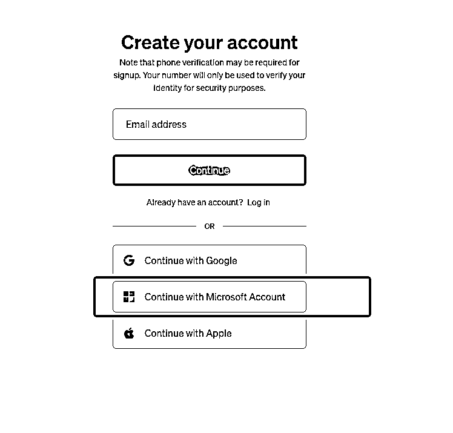

来源：https://hs88nuws9z.feishu.cn/docx/CqmRdM1C1omOJixepDwclpwunTe
写在前面，目前ChatGPT对大陆、香港、澳门、韩国、俄罗斯、台湾等地区进行了屏蔽，所以我们用这几个地区的卡是无法支付成功的（包括Paypal、VISA、Master等卡种）
OpenAI支持的国家不含国内，会通过网络环境和IP地址来定位我们是不是处于国内，如果是处于国内，则不能登录或注册，所以在注册前需要先将自己的IP定位调整至美国。通过https://ip.cn/可以有效查询我们的IP地址（翻墙违法，大家不要违法）
ChatGPT Plus的付款是用的 Stripe Checkout ，理论上大多数卡(包括大陆的 Visa/万事达甚至是银联)都可以(因为我自己就接入过 Stripe )，但是OpenAl 在 Stripe 限定了银行卡支付的国家。
最近我尝试了国内实体卡，香港虚拟卡，美国虚拟卡等不下干 10 张信用卡，与此同时还尝试了全球付的香港虚拟信用卡以及万里汇的香港虚拟信用卡，也绑定不上。
根据我的尝试我大致总结了下OpenAl/ChatGPT Plus 支持的卡段:
=531993(DePay)需要USDT才能充值556766(NobePay)
=489683(Qbit Visa)，存疑
= Payoneer 的信用卡529366 也可以绑定OpenAl/ChatGPT Plus
=QBIT虚拟信用卡: 489683
540524 卡段绑定ChatGPT Plus成功
556150 卡段绑定ChatGPT Plus成功
OpenAl/ChatGPT Plus 不支持的信用卡:
我们一直在关注AI的发展情况，大半年的时间过去了，ChatGPT目前已经具备的了多模态的能力，简单点说就是ChatGPT已经具备比较强的工作能力了，相当于全球Top级别的大学毕业生的水平，但这些功能都集中在4.0上，4.0需要Plus版本的会员才可以使用。
在这个背景下，我们作为国内公司，没有美国手机号码和信用卡，很难去充值成功，国内非跨境这个领域的想去充值更是难上加难，当然，这也是一个商机（代充and代注册）。
本帖主要是帮助圈友们解决注册账号，防止被封，和充值Plus。关于怎么使用和学习，请大家看圈友们的文章，黄小刀在这方面很专业。以下将ChatGPT简写为CT。
本方法来源于生财有术航海家群的分享，经过这两天我进行了两个账号的实际测试，均注册成功和充值成功后，将本方法和教程分享在生财有术，希望对各位圈友有一定的帮助。
核心原理：苹果手机上登录美区Apple ID，下载CT APP应用。给美区Apple ID用充值卡充值，然后到CT APP里面订阅。
测试时间：2023.10.19
最合适的方法是用微软账号直接登录，因为是微软投资的公司，和微软深度绑定。微软的outlook邮箱是免费的，注册没有任何其他花费。

https://mp.weixin.qq.com/s/P6mOqTihAkun49q7rGB5IQ
不懂怎么搞接码平台的看链接里的文章，仍然有效。
到这个步骤就注册成功了。
这个步骤坑比较多，要注意避坑。网络环境和IP地址一定要是美区的，不然注册不成功
1、直接看这篇教程怎么注册美区ID
如何注册美区苹果账号
重点要注意的地方！！！
1、国家和地区一定要选美国，手机号码可以是中国，手机号码千万不要搞虚拟号码做，用中国大陆的手机一样可以注册美区Apple ID。我死了3个号都是用虚拟号码弄的，Apple ID后续需要用手机号码验证的地方很多，虚拟号码是临时的，所以很容易挂。
2、用电脑注册有几率会收不到手机验证码，所以我后面是用手机注册的（手机网络环境和地区需要改为美国和英语），手机注册的成功率非常高。
3、Apple ID注册完成后，在付费的时候需要填写账单地址，这个时候要非常非常小心，一定要填美国免税州美国免税州邮编,5个免税州地址,你所需要的都在这里-Usitrip走四方旅游网，我前几个账号不能成功扣款的最大原因就是因为填成了其他州的地址。这样的话需要用美国信用卡才能修改账单地址。其他没什么需要注意的了。
最后在支付的过程里大概率会遇到支付不了的情况，遇到这种情况一般是Apple的风控问题。
可以拨打Apple的电话，找人工服务直接解决，耗时大概10分钟。
一个Apple ID只能绑定一个一个CT的Plus账号，如果需要充值多个账号的话，需要注册多个Apple ID，目前用一台手机我注册了5个Apple ID依然没发现有什么问题，另外流程上最好是注册新的Apple ID后重新下载CT APP然后重新支付。
这里有一些利差机会，注册一个号市场价在50-100块钱，代充一个Plus会员在人民币180块钱（自己成本在19.99美金大概150人民币不到)，愿意下场去赚这个钱的，注册一个号+充值Plus成功大概在20分钟左右，一个小时可以赚一两百。
最后，祝大家生财有术。